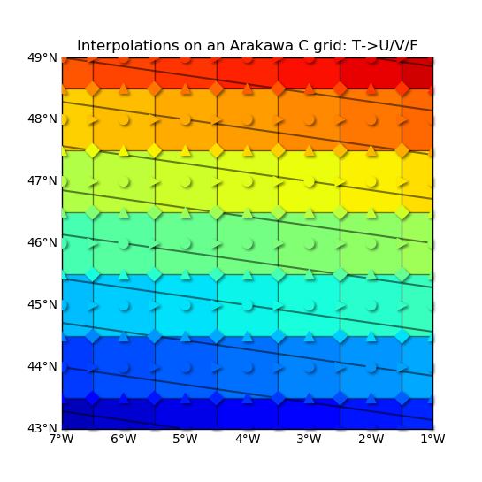
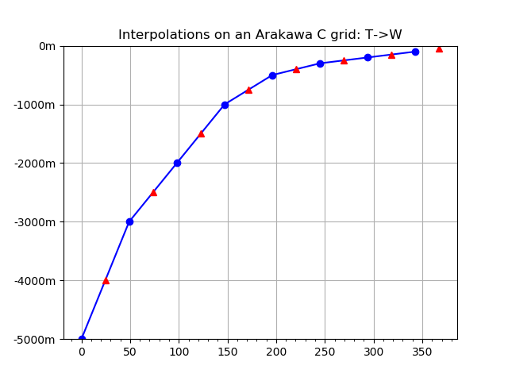

3.5.14.2. test_arakawa_interp.py – Test vacumm.data.misc.arakawa.CGrid.interp()¶


"""Test :meth:`vacumm.data.misc.arakawa.CGrid.interp`"""
from vcmq import MV2, N, create_grid, create_dep, set_grid, map2, \
code_file_name, CGrid, minmax, curve2, add_grid
# Initial variable
grid = create_grid(N.arange(-7, 0.), N.arange(43, 50.))
dep = create_dep([-5000, -3000, -2000, -1000, -500, -300, -200, -100.])
var = {}
var['t'] = MV2.reshape(N.arange(grid.size()*len(dep))*1., (len(dep), )+grid.shape)
set_grid(var['t'], grid)
var['t'].setAxis(0, dep)
# Arakawa manager
ag = CGrid()
# Interpolations
for p in 'u', 'v', 'f', 'w':
var[p] = ag.interp(var['t'], 't', p, mode='extrap')
# Surface plots
vmin, vmax = minmax(*[var[p][-1] for p in ['u', 'v', 'f']])
kw = dict(show=False, res=None, vmin=vmin, vmax=vmax, colorbar=False, grid=False, cmap='jet')
m = map2(var['t'][-1], fill='pcolor',
title='Interpolations on an Arakawa C grid: T->U/V/F', **kw)
add_grid(var['t'], linestyle='-')
kw.update(fill='scatter', contour=False, fill_s=60)
markers = dict(u='>', v='^', f='D', t='o')
for p in 't', 'u', 'v', 'f':
m = map2(var[p][-1], fill_marker=markers[p], shadow=True, zorder=100, **kw)
m.savefig(code_file_name(ext='_1.png'))
m.close()
# Vertical plot
curve2(var['t'][:, 0, 0], 'o-b', ymax=0, show=False,
title='Interpolations on an Arakawa C grid: T->W')
curve2(var['w'][:, 0, 0], '^r', show=False, savefig=code_file_name(ext='_2.png'))
result = [
('assertEqual', [var['t'][0, 0, :2].mean(), var['u'][0, 0, 0]]),
('assertEqual', [var['t'][0, :2, 0].mean(), var['v'][0, 0, 0]]),
('assertEqual', [var['t'][0, :2, :2].mean(), var['f'][0, 0, 0]]),
('assertEqual', [var['t'][:2, 0, 0].mean(), var['w'][0, 0, 0]]),
]